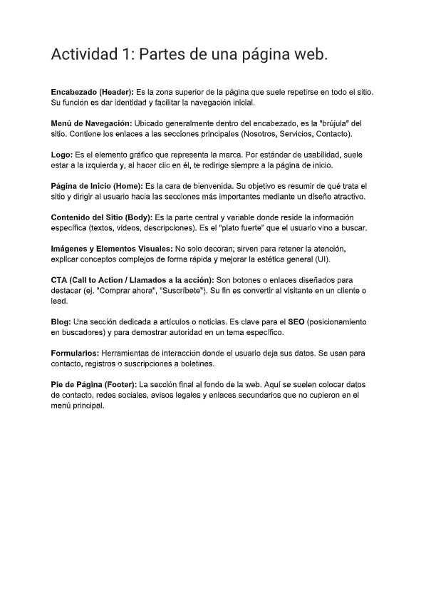

Tarea 1: Selectores en CSS
Durante esta actividad aprendí cómo funcionan los selectores en CSS y la importancia que tienen para dar estilo a una página web de manera organizada. Logré identificar los distintos tipos de selectores y comprendí cómo cada uno permite seleccionar elementos específicos dentro del código HTML. Además, practiqué con ejemplos que me ayudaron a mejorar mi comprensión sobre su uso en el desarrollo web y su aplicación en proyectos reales.
Ver PDF completo
Participación 1: Partes de una página web
Durante esta actividad investigué los elementos más importantes de una página web y descubrí para qué sirve cada uno. Aprendí que el encabezado y el menú facilitan la navegación del usuario, mientras que el logo representa la identidad del sitio. También comprendí que las imágenes ayudan a mejorar la apariencia visual y que el contenido web proporciona la información principal. Entendí que la página de inicio funciona como presentación del sitio y que el pie de página muestra información adicional como contactos y redes sociales. Además, conocí la función de los llamados a la acción, el blog y los formularios. Para finalizar, elaboré una maqueta donde señalé la ubicación de cada parte de la página web.